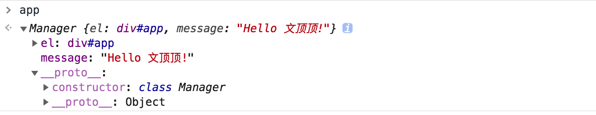
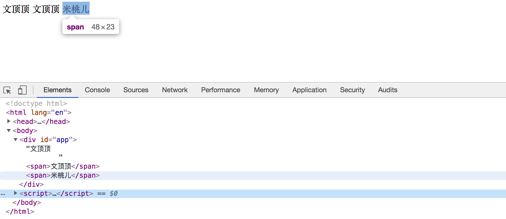

<!DOCTYPE html><html lang="zh-Hans"><head><meta charset="utf-8"><meta name="X-UA-Compatible" content="IE=edge"><title> 前端框架系列-文本插值 · 花田半亩</title><meta name="description" content="前端框架系列-文本插值 - 文顶顶"><meta name="viewport" content="width=device-width, initial-scale=1"><link rel="icon" href="/logo.jpeg"><link rel="stylesheet" href="/css/apollo.css"><link rel="search" type="application/opensearchdescription+xml" href="https://weibo.com/u/3800117445/atom.xml" title="花田半亩"><meta name="generator" content="Hexo 5.4.0"><link rel="alternate" href="/atom.xml" title="花田半亩" type="application/atom+xml">
</head><body><div class="wrap"><header><a href="/" class="logo-link"></a><ul class="nav nav-list"><li class="nav-list-item"><a href="/" target="_self" class="nav-list-link">文顶顶</a></li><li class="nav-list-item"><a href="/tags/" target="_self" class="nav-list-link">标签</a></li><li class="nav-list-item"><a href="https://www.cnblogs.com/wendingding/" target="_blank" class="nav-list-link">博客园</a></li><li class="nav-list-item"><a href="https://github.com/flowerField" target="_blank" class="nav-list-link">GITHUB</a></li></ul></header><main class="container"><div class="post"><article class="post-block"><h1 class="post-title">前端框架系列-文本插值</h1><div class="post-info">May 22, 2017<span class="post-count"></span> ✧ 字数统计:1.7k(字) &nbsp;&nbsp; ♨︎ 阅读时长:6(分钟)</div><div class="post-content"><div class='tip'>本文讨论 `前端框架\模板中` 文本插值的实现方案，本文将会主要以[Vue]()框架作为参考讨论文本插值语法的具体实现和推导方案，并补充相关的技术细节。</div>

<p class='titleX'>**文本插值**</p>

<p>在Vue官网文档的第一部分( <a target="_blank" rel="noopener" href="https://cn.vuejs.org/v2/guide/index.html">声明式渲染</a> )我们可以看到下面一段描述。</p>
<figure class="highlight html"><table><tr><td class="gutter"><pre><span class="line">1</span><br><span class="line">2</span><br><span class="line">3</span><br><span class="line">4</span><br><span class="line">5</span><br><span class="line">6</span><br><span class="line">7</span><br><span class="line">8</span><br><span class="line">9</span><br><span class="line">10</span><br><span class="line">11</span><br><span class="line">12</span><br><span class="line">13</span><br><span class="line">14</span><br><span class="line">15</span><br><span class="line">16</span><br></pre></td><td class="code"><pre><span class="line">Vue.js 的核心是一个允许采用简洁的模板语法来声明式地将数据渲染进 DOM 的系统：</span><br><span class="line"></span><br><span class="line"><span class="tag">&lt;<span class="name">div</span> <span class="attr">id</span>=<span class="string">&quot;app&quot;</span>&gt;</span></span><br><span class="line">  &#123;&#123; message &#125;&#125;</span><br><span class="line"><span class="tag">&lt;/<span class="name">div</span>&gt;</span></span><br><span class="line"></span><br><span class="line">var app = new Vue(&#123;</span><br><span class="line">  el: &#x27;#app&#x27;,</span><br><span class="line">  data: &#123;</span><br><span class="line">    message: &#x27;Hello Vue!&#x27;</span><br><span class="line">  &#125;</span><br><span class="line">&#125;)</span><br><span class="line">我们已经成功创建了第一个 Vue 应用！</span><br><span class="line">看起来这跟渲染一个字符串模板非常类似，但是 Vue 在背后做了大量工作。</span><br><span class="line">现在数据和 DOM 已经被建立了关联，所有东西都是响应式的。我们要怎么确认呢？</span><br><span class="line">打开你的浏览器的JavaScript控制台，并修改 app.message 的值，你将看到上例相应地更新。</span><br></pre></td></tr></table></figure>
<p>在Vue官网的另一部分(<a target="_blank" rel="noopener" href="https://cn.vuejs.org/v2/guide/syntax.html">模板语法-插值</a>)说明了<span style='color:red'>“ Vue.js 使用了基于 HTML 的模板语法，允许开发者声明式地将 DOM 绑定至底层 Vue 实例的数据。所有 Vue.js 的模板都是合法的 HTML ，所以能被遵循规范的浏览器和 HTML 解析器解析 ”。</span></p>
<p>我们知道，在Vue框架中数据绑定的插值语法使用的是<code>Mustache语法 (双大括号)</code> ，而这篇短小的文章将简单讨论其内部的实现机制。</p>
<p class='titleX'>**Class-实例的构建初步**</p>

<figure class="highlight html"><table><tr><td class="gutter"><pre><span class="line">1</span><br><span class="line">2</span><br><span class="line">3</span><br><span class="line">4</span><br><span class="line">5</span><br><span class="line">6</span><br><span class="line">7</span><br><span class="line">8</span><br><span class="line">9</span><br><span class="line">10</span><br><span class="line">11</span><br><span class="line">12</span><br><span class="line">13</span><br><span class="line">14</span><br><span class="line">15</span><br></pre></td><td class="code"><pre><span class="line"># 标签部分</span><br><span class="line"><span class="tag">&lt;<span class="name">div</span> <span class="attr">id</span>=<span class="string">&quot;app&quot;</span>&gt;</span></span><br><span class="line">  &#123;&#123; message &#125;&#125;</span><br><span class="line"><span class="tag">&lt;/<span class="name">div</span>&gt;</span></span><br><span class="line"></span><br><span class="line"># 引入框架文件</span><br><span class="line"><span class="tag">&lt;<span class="name">script</span> <span class="attr">src</span>=<span class="string">&quot;https://cdn.jsdelivr.net/npm/vue/dist/vue.js&quot;</span>&gt;</span><span class="tag">&lt;/<span class="name">script</span>&gt;</span></span><br><span class="line"></span><br><span class="line"># 创建Vue实例</span><br><span class="line">var app = new Vue(&#123;</span><br><span class="line">  el: &#x27;#app&#x27;,</span><br><span class="line">  data: &#123;</span><br><span class="line">    message: &#x27;Hello Vue!&#x27;</span><br><span class="line">  &#125;</span><br><span class="line">&#125;)</span><br></pre></td></tr></table></figure>
<p>在Vue框架中我们总是会通过上面的方式来创建并得到一个实例对象，在调用的时候我们传递了一个对象作为构造函数(class)的参数，在该对象中我们设置了<code>挂载的标签(el属性)</code>、<code>实例数据(data属性)</code>等信息。这里，我们先提供一个<a href=""> 构造函数 或者是 Class </a>来模拟这个整体的结构。</p>
<figure class="highlight javascript"><table><tr><td class="gutter"><pre><span class="line">1</span><br><span class="line">2</span><br><span class="line">3</span><br><span class="line">4</span><br><span class="line">5</span><br><span class="line">6</span><br><span class="line">7</span><br><span class="line">8</span><br><span class="line">9</span><br><span class="line">10</span><br><span class="line">11</span><br><span class="line">12</span><br><span class="line">13</span><br><span class="line">14</span><br><span class="line">15</span><br><span class="line">16</span><br><span class="line">17</span><br><span class="line">18</span><br><span class="line">19</span><br><span class="line">20</span><br></pre></td><td class="code"><pre><span class="line"><span class="comment">/* Class的写法 */</span></span><br><span class="line"><span class="class"><span class="keyword">class</span> <span class="title">Manager</span> </span>&#123;</span><br><span class="line">    <span class="function"><span class="title">constructor</span>(<span class="params">o</span>)</span> &#123;</span><br><span class="line">        <span class="comment">/*  根据传入的el来获取页面中挂载的标签 */</span></span><br><span class="line">        <span class="built_in">this</span>.el = <span class="built_in">document</span>.querySelector(o.el);</span><br><span class="line"></span><br><span class="line">        <span class="comment">/* 把对象参数中的data成员(数据)添加到实例对象 */</span></span><br><span class="line">        <span class="comment">/* 在访问的时候可以直接通过(new Manager()).xx访问 */</span></span><br><span class="line">        <span class="keyword">for</span> (<span class="keyword">let</span> key <span class="keyword">in</span> o.data) &#123;</span><br><span class="line">            <span class="built_in">this</span>[key] = o.data[key];</span><br><span class="line">        &#125;</span><br><span class="line">    &#125;</span><br><span class="line">&#125;</span><br><span class="line"><span class="comment">/* 初始化：传入配置对象创建实例对象 */</span></span><br><span class="line"><span class="keyword">let</span> app = <span class="keyword">new</span> Manager(&#123;</span><br><span class="line">    <span class="attr">el</span>: <span class="string">&quot;#app&quot;</span>,</span><br><span class="line">    <span class="attr">data</span>: &#123;</span><br><span class="line">        <span class="attr">message</span>: <span class="string">&quot;Hello 文顶顶!&quot;</span></span><br><span class="line">    &#125;</span><br><span class="line">&#125;)</span><br></pre></td></tr></table></figure>


<p>在开始的时候，[ 构造函数 \ Class ]的样子可能可能是像上面这样的，先尝试获取参数对象中<code>el</code>的值以获取实例在页面中挂载的标签，然后通过一个循环结构来把<code>data</code>中的数据都直接添加到实例对象，这种处理将允许我们直接以<code>app.message</code>的方式来操作数据。</p>
<p class='titleX'>**数据和标签的渲染关系**</p>

<p>设计出基本结构后，现在我们可以开始考虑如果需要把<code>data</code>中的数据渲染(绑定)到页面的标签，那该如何实现？ 简单思考一秒钟后，我们似乎可以尝试以下的实践策略：</p>
<figure class="highlight html"><table><tr><td class="gutter"><pre><span class="line">1</span><br><span class="line">2</span><br><span class="line">3</span><br><span class="line">4</span><br><span class="line">5</span><br></pre></td><td class="code"><pre><span class="line">(1) 在初始化的操作中先获取挂载标签的属性节点(这很容易办到，使用innerHTML就可以)。</span><br><span class="line">(2) 在innerHTML中寻找类类似于&#123;&#123;message&#125;&#125;的结构，如果找到那么抠出双括号中的字段-message</span><br><span class="line">(3) 在实例对象中获取-message字段对应的value值，使用该值来替换&#123;&#123;message&#125;&#125;部分。</span><br><span class="line">(!) 因为标签中可能存在多个插值代码，因此可能需要循环处理，在寻找插值代码的时候使用正则匹配或许会比较合适。</span><br><span class="line"></span><br></pre></td></tr></table></figure>
<p>下面试着给出用正则来匹配标签内容并进行替换的核心代码，正则表达式的结果可以参考下面的注释，用于匹配<a href="">  </a>的特定结构，<code>\s*</code>表示可以允许存在空格，<code>\\s</code>表示对<code>\</code>进行转义处理，参数<code>g</code>用以表示应用全局匹配。</p>
<figure class="highlight javascript"><table><tr><td class="gutter"><pre><span class="line">1</span><br><span class="line">2</span><br><span class="line">3</span><br></pre></td><td class="code"><pre><span class="line"><span class="keyword">let</span> reg = <span class="keyword">new</span> <span class="built_in">RegExp</span>(<span class="string">`&#123;&#123;2&#125;\\s*msg\\s*&#125;&#123;2&#125;`</span>, <span class="string">&quot;g&quot;</span>);</span><br><span class="line"><span class="comment">/* /&#123;&#123;2&#125;\s*msg\s*&#125;&#123;2&#125;/g  */</span></span><br><span class="line"><span class="built_in">this</span>.el.innerHTML = <span class="built_in">this</span>.el.innerHTML.replace(reg, <span class="string">&quot;文顶顶&quot;</span>);</span><br></pre></td></tr></table></figure>
<p>考虑到在参数对象的<code>data</code>中可能会有多个数据(<code>键值对</code>)，且执行文本插值的时候某个数据可能会出现在标签的多个位置，因此需要通过循环的方式来检查 <a href="">innerTTML</a> 字段中每个数据的情况。我们可以通过 <code>Object.keys()</code>方法来获取所有的属性名(<code>key的集合</code>)，然后遍历该数组并执行正则替换操作。</p>
<figure class="highlight html"><table><tr><td class="gutter"><pre><span class="line">1</span><br><span class="line">2</span><br><span class="line">3</span><br><span class="line">4</span><br><span class="line">5</span><br><span class="line">6</span><br><span class="line">7</span><br><span class="line">8</span><br><span class="line">9</span><br><span class="line">10</span><br><span class="line">11</span><br><span class="line">12</span><br><span class="line">13</span><br><span class="line">14</span><br><span class="line">15</span><br><span class="line">16</span><br><span class="line">17</span><br><span class="line">18</span><br><span class="line">19</span><br><span class="line">20</span><br><span class="line">21</span><br><span class="line">22</span><br><span class="line">23</span><br><span class="line">24</span><br><span class="line">25</span><br><span class="line">26</span><br><span class="line">27</span><br><span class="line">28</span><br><span class="line">29</span><br><span class="line">30</span><br><span class="line">31</span><br><span class="line">32</span><br><span class="line">33</span><br><span class="line">34</span><br><span class="line">35</span><br><span class="line">36</span><br><span class="line">37</span><br><span class="line">38</span><br><span class="line">39</span><br></pre></td><td class="code"><pre><span class="line"><span class="comment">&lt;!-- 标签部分 --&gt;</span></span><br><span class="line"><span class="tag">&lt;<span class="name">div</span> <span class="attr">id</span>=<span class="string">&quot;app&quot;</span>&gt;</span>&#123;&#123; message &#125;&#125;</span><br><span class="line">        <span class="tag">&lt;<span class="name">span</span>&gt;</span>&#123;&#123;message&#125;&#125;<span class="tag">&lt;/<span class="name">span</span>&gt;</span></span><br><span class="line">        <span class="tag">&lt;<span class="name">span</span>&gt;</span>&#123;&#123;msg&#125;&#125;<span class="tag">&lt;/<span class="name">span</span>&gt;</span></span><br><span class="line"><span class="tag">&lt;/<span class="name">div</span>&gt;</span></span><br><span class="line"><span class="comment">&lt;!-- JS代码部分 --&gt;</span></span><br><span class="line"><span class="tag">&lt;<span class="name">script</span>&gt;</span><span class="handlebars"><span class="xml"></span></span></span><br><span class="line"><span class="xml"><span class="handlebars">        /* Class的写法 */</span></span></span><br><span class="line"><span class="xml"><span class="handlebars">        class Manager &#123;</span></span></span><br><span class="line"><span class="xml"><span class="handlebars">            constructor(o) &#123;</span></span></span><br><span class="line"><span class="xml"><span class="handlebars">                /*  根据传入的el来获取页面中挂载的标签 */</span></span></span><br><span class="line"><span class="xml"><span class="handlebars">                this.el = document.querySelector(o.el);</span></span></span><br><span class="line"><span class="xml"><span class="handlebars"></span></span></span><br><span class="line"><span class="xml"><span class="handlebars">                /* 把对象参数中的data成员(数据)添加到实例对象 */</span></span></span><br><span class="line"><span class="xml"><span class="handlebars">                /* 在访问的时候可以直接通过(new Manager()).xx访问 */</span></span></span><br><span class="line"><span class="xml"><span class="handlebars">                for (let key in o.data) &#123;</span></span></span><br><span class="line"><span class="xml"><span class="handlebars">                    this[key] = o.data[key];</span></span></span><br><span class="line"><span class="xml"><span class="handlebars">                &#125;</span></span></span><br><span class="line"><span class="xml"><span class="handlebars">                /* 获取data数据中所有的key */</span></span></span><br><span class="line"><span class="xml"><span class="handlebars">                /* 根据data中的属性集合来遍历渲染页面中指定的内容 */</span></span></span><br><span class="line"><span class="xml"><span class="handlebars">                Object.keys(o.data).forEach(ele =&gt; &#123;</span></span></span><br><span class="line"><span class="xml"><span class="handlebars">                    let reg = new RegExp(`</span><span class="template-variable">&#123;&#123;<span class="name">2</span>&#125;\\s*$&#123;ele&#125;\\s*&#125;&#123;<span class="number">2</span>&#125;`, <span class="string">&quot;g&quot;</span>);</span></span></span><br><span class="line"><span class="template-variable"><span class="handlebars">                     /*  /&#123;&#123;<span class="number">2</span>&#125;\s*message\s*&#125;&#123;<span class="number">2</span>&#125;/g */</span></span></span><br><span class="line"><span class="template-variable"><span class="handlebars">                     /*  /&#123;&#123;<span class="number">2</span>&#125;\s*msg\s*&#125;&#123;<span class="number">2</span>&#125;/g     */</span></span></span><br><span class="line"><span class="template-variable"><span class="handlebars">                    console.log(<span class="name">this.el.innerHTML</span>, reg);</span></span></span><br><span class="line"><span class="template-variable"><span class="handlebars">                    this.el.innerHTML = this.el.innerHTML.replace(<span class="name">reg</span>, this[ele]);</span></span></span><br><span class="line"><span class="template-variable"><span class="handlebars">                &#125;)</span></span></span><br><span class="line"><span class="template-variable"><span class="handlebars">            &#125;</span></span></span><br><span class="line"><span class="template-variable"><span class="handlebars">        &#125;</span></span></span><br><span class="line"><span class="template-variable"><span class="handlebars"></span></span></span><br><span class="line"><span class="template-variable"><span class="handlebars">        /* 初始化：传入配置对象创建实例对象 */</span></span></span><br><span class="line"><span class="template-variable"><span class="handlebars">        let app = new Manager(&#123;</span></span></span><br><span class="line"><span class="template-variable"><span class="handlebars">            <span class="name">el:</span> <span class="string">&quot;#app&quot;</span>,</span></span></span><br><span class="line"><span class="template-variable"><span class="handlebars">            data: &#123;</span></span></span><br><span class="line"><span class="template-variable"><span class="handlebars">                message: <span class="string">&quot;文顶顶&quot;</span>,</span></span></span><br><span class="line"><span class="template-variable"><span class="handlebars">                msg: <span class="string">&quot;米桃儿&quot;</span></span></span></span><br><span class="line"><span class="template-variable"><span class="handlebars">            &#125;</span></span></span><br><span class="line"><span class="template-variable"><span class="handlebars">        &#125;)</span></span></span><br><span class="line"><span class="template-variable"><span class="handlebars"></span></span><span class="tag">&lt;/<span class="name">script</span>&gt;</span></span><br></pre></td></tr></table></figure>
<p>当代码执行的时候，可以看到下面的效果。<br></p>
<p>至此，便简单了实现了数据-标签渲染的功能。如果数据发生变化后标签中对应的内容也要随之变化，这种数据驱动UI的结构最核心之处在于<code>监听数据的变化并通知给UI视图</code>，具体实现可以参考下一篇文章。</p>


<hr>
<ul>
<li>Posted by 博客园·<a target="_blank" rel="noopener" href="http://www.cnblogs.com/wendingding/">文顶顶</a> | <a target="_blank" rel="noopener" href="http://wendingding.com/">花田半亩</a></li>
<li>联系作者 简书·<a target="_blank" rel="noopener" href="http://www.jianshu.com/users/c5703017b9f5/latest_articleshttp://www.jianshu.com/users/c5703017b9f5/latest_articles">文顶顶</a> 新浪微博·<a href="http://weibo.com/p/1005053800117445/home?from=page_100505&mod=TAB#place">Coder_文顶顶</a></li>
<li>原创文章，版权声明：自由转载-非商用-非衍生-保持署名 | <a target="_blank" rel="noopener" href="http://www.cnblogs.com/wendingding/">文顶顶</a></li>
</ul>
</div></article></div></main><footer><div class="paginator"><a href="/2017/05/22/%E6%9D%82%E8%B0%88%E4%B9%A6%E5%9D%8A-%E7%9C%9F%E6%AD%A3%E7%9A%84%E8%B4%A2%E5%AF%8C%E5%9C%A8%E5%93%AA%E9%87%8C/" class="prev">上一篇</a><a href="/2017/04/10/%E6%BA%90%E7%A0%81%E7%B3%BB%E5%88%97%20jQuery%E6%BA%90%E7%A0%81/" class="next">下一篇</a></div><div class="copyright"><p>© 2015 - 2022 <a href="https://weibo.com/u/3800117445">文顶顶</a> &nbsp;☁ 全站字数统计 422.4k (字)</p></div></footer></div><script async src="//cdn.bootcss.com/mathjax/2.7.0/MathJax.js?config=TeX-MML-AM_CHTML" integrity="sha384-crwIf/BuaWM9rM65iM+dWFldgQ1Un8jWZMuh3puxb8TOY9+linwLoI7ZHZT+aekW" crossorigin="anonymous"></script></body></html>